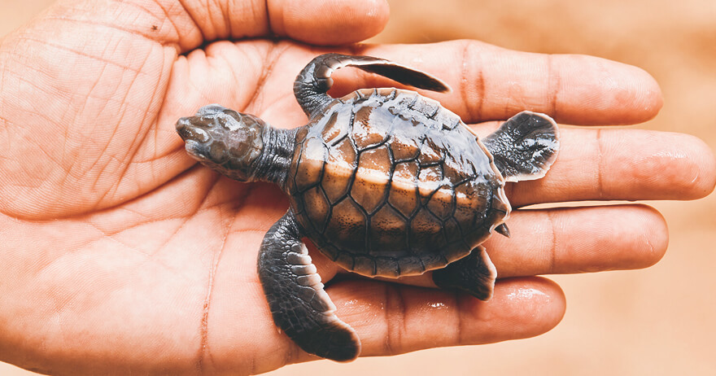

The Bethota Turtle Hatchery is a conservation project in Sri Lanka that aims to protect sea turtles and their eggs from harm. The hatchery collects the eggs from endangered turtle species, incubates them, and releases the hatchlings back into the ocean. Visitors to the hatchery can learn about the importance of turtle conservation and see the baby turtles up close before their release. The project also educates local communities on the importance of turtle conservation and strives to reduce illegal practices, such as egg poaching.


Our History
The origins of the Kosgoda Turtle Hatchery can be traced back to 1981 when like minded Sri Lankan wildlife enthusiasts and researchers joined forces to establish an organization aimed at protecting sea turtles in their natural habitat. This non profit venture seeks to increase their population while also safeguarding against threats arising from hunting, fishing development activities as well as beach erosion that destroys turtle nesting sites. During the 1970s many fishermen along Sri Lankas coast relied on traditional fishing techniques that inadvertently captured and killed these marine creatures for their valuable meat and shells. To counter such trends activists established this initiative as a safe haven for sea turtles where they could nest without fear while also rescuing injured or orphaned ones through dedicated care until they could be released into the ocean once again.
Turtle Conservation Programs
Located in Kosgoda - a coastal village in Sri Lanka - is the Kosgoda Turtle Conservation Program established back in 1981 solely for conserving endangered sea turtles that inhabit this region. Concentrating specifically on five native species- green turtle, hawksbill turtle; loggerhead turtle; leatherback turtle; olive ridley turtle- this program operates under Sri Lanka Wildlife Conservation Society collaborating closely with local communities including schools as well as government organizations for more effective action towards conserving these creatures. Various objectives aim at making this possible- from carrying out significant researches to direct conservation efforts down to motivational education programs empowering people about protecting these wonderful beings' existence when it comes to specific operations; they have a heart: The Turtles Hatchery where they collect eggs from beaches allowing hatching under controlled circumstances while releasing hatchlings back into the sea. The goal is to increase survival rates as only one in 5000 manages to make it through to adulthood. Also, the program conducts researches on these turtles' lifestyle habits such as reproduction, migration patterns, feeding habits and growth rates. The data collected plays an important role in enhancing conservation measures.
Visiting the Hatchery
Kosgoda Turtle Hatchery is a popular tourist attraction located in the southern coast of Sri Lanka. The hatchery is known for its efforts in conserving and protecting sea turtles, which are a vital part of the country's rich biodiversity. Visitors can watch the turtle hatchlings in the hatchery's incubation tanks, learn about their habitat and feeding habits, and witness the release of baby turtles into the sea. The hatchery also offers educational programs and opportunities for visitors to volunteer for turtle conservation projects.